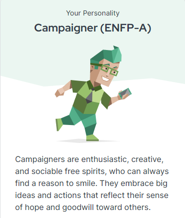
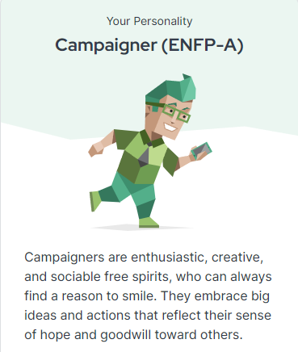

Personal.Leadership.
This semester I learned a lot about receiving feedback and how to use it to improve my work.
For my next semester, I want to ask for more feedback from teachers.
This semester I didn't ask that much feedback, and thus I didn't know where I stood in my progress
By asking feedback I can keep better track of my tasks and learning outcome.
This will also improve my planning and time management skills.
And by asking for more feedback, I have a better understanding of what I need to improve.
This counts for all my projects, so this is my learning moment of this semester.
Growth.
This semester I learned how to make basic html websites and do simple research using the DOT framework.
I also learned how to use the Adobe suite, like Adobe XD and Adobe Illustrator.
This will be a great asset for my future projects and designs.
For my self, I want to improve in presenting,
asking and receiving feedback and how to use this feedback to Improve my work.
Future.
I'm really excited for UX design and create cool, user-friendly designs.
I think there's so much to learn in this field,
especially about how people interact with designs and what attracts them,
not only in websites or apps but also in physical products.
I want to learn the best ways to approach design,
so it really grabs people's attention and keeps them engaged.
Any tips or resources on how to make designs that people love would be awesome!
I've also been to the Fontys career day when I could see companies and what they do.
Here I oriented In things I can do and things I liked.
I also went to the Fontys career day when I could see companies and what they do.
Here I searched for a company that did something with UX design.
I found a few and asked them what they did and what I would be doing if I was working there.
This was a great experience and I learned a lot about what I could do in the future.
 
